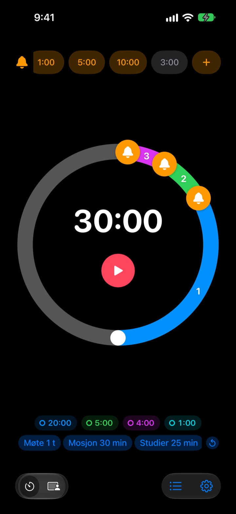
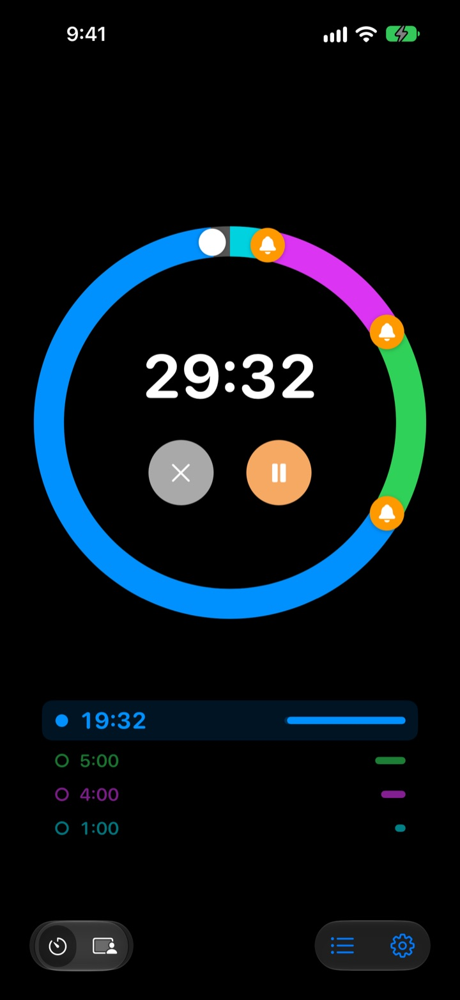
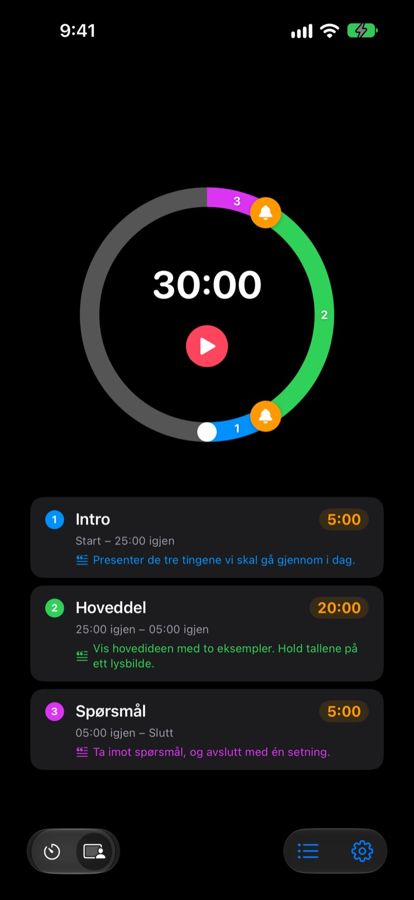
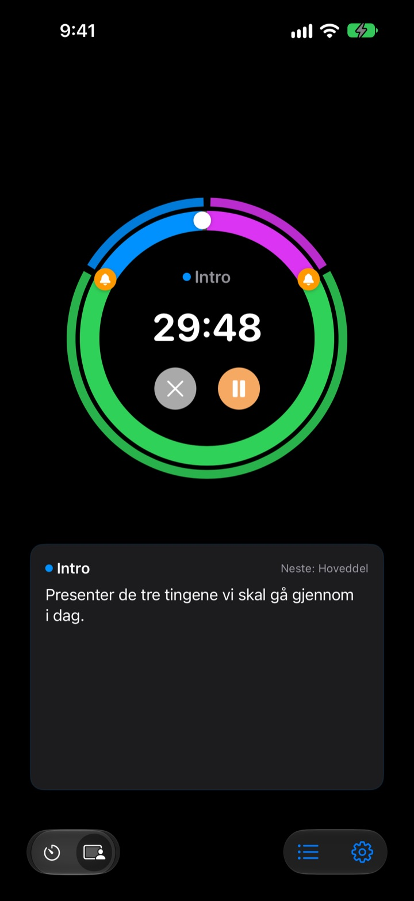

Ikke når det er over,
men før
5 minutter før foredraget er slutt, 3 før møtet runder av. Rereminder sier fra ved hvert punkt du velger, så du slipper å se på klokka hele tiden.
Forvarsler er gratis og uten grense. For iPhone, Apple Watch og Mac.

Prøv det her
Velg lengde og forvarsler, og trykk på den røde knappen. Et minutt går på et sekund, og hvert forvarsel lyder når det er dets tur.
Har tidtakeren ringt når det allerede var for sent?
En vanlig tidtaker ringer først på null. Foredraget er slutt før du kommer til konklusjonen, timen slutter uten oppsummering, og møtet glir over i det neste uten noen beslutning. Du trenger ikke et signal om at tiden er ute, men et varsel mens det fortsatt er tid til å runde av.
Forvarsler før slutt, så mange du vil
Dra bjellene på skiven til 10, 5 eller 1 minutt før slutt, eller hvor som helst. Det er ingen grense, og hvert forvarsel kan ha sin egen melding, for eksempel «Rund av lysbildene».
Med skjermen av ser du gjenværende tid på låseskjermen og i Dynamic Island, og Apple Watch prikker deg på håndleddet.

Del opp foredraget i deler
Innledning 5 minutter, hoveddel 20, spørsmål 5. Gi hver del et navn og et manus. Hver gang delen skifter, får du et varsel med navnet, og tidsplanen holder nesten av seg selv. (Pro)

Det du skal si nå, står på skjermen
Mens den går, ser du manuset til delen du er i og hva som kommer etterpå med stor skrift. Går du forbi null, teller den videre, så du vet nøyaktig hvor mye du dro over. (Pro)

I gang på tre trinn
- 1
Still inn tiden
Drei på skiven, eller trykk på tiden og skriv den inn. Én runde er 60 minutter, to runder 120.
- 2
Sett forvarsler
Trykk på en etikett som 1:00 eller 5:00 øverst, eller dra en bjelle inn på skiven.
- 3
Start og glem det
Lås iPhonen. iPhone og Apple Watch sier fra ved hvert punkt du har satt.
De mest brukte oppsettene
- Foredrag på 20 minutter
- 5 min før «Gå over til konklusjonen», 1 min før «Takk for meg»
- Skoletime på 45 minutter
- 10 min før «Forklar lekser», 3 min før «Oppsummering»
- Møte på 30 minutter
- 5 min før «Bekreft beslutningene»
- Pilates- eller yogatime
- Øktmodus med én del per serie (Pro)
- Lesing i 25 minutter
- 5 min før, så pause
- 3 minutters pause mellom sett
- 30 sek før «Gjør deg klar til neste sett»
- Mentorsamtale på en time
- 15 og 5 min før
Lagre det du bruker ofte som mal, og start det med ett trykk (fra Husk og oppover). Du kan også starte eller stoppe en tidtaker med Snarveier og Siri.
Forvarsler er gratis. Betal bare hvis den skal huske noe.
Gratis
- Ubegrenset antall forvarsler
- Din egen melding på hvert forvarsel
- Live Activity på låseskjermen og i Dynamic Island
- Fortsett å varsle til du svarer, og avslutt med ekte alarm
- App for Apple Watch og menylinjen på Mac
- Alle temafarger
Husk · Pro
- Husk: lagre oppsett som maler og start dem med ett trykk
- Husk: åpne appen igjen, og alt er som du forlot det
- Pro: alt i Husk pluss øktmodus med navn på delene og manus
- Pro: overtid, historikk og statistikk
For hver plan velger du årsabonnement eller et engangskjøp for alltid. Du kan prøve øktmodus, overtid og historikk noen ganger før du betaler.
Ingen reklame. Ett Evighetspass åpner dessuten alle appene Leeo lager.
Vanlige spørsmål
Et forvarsel ringte ikke.
Det er nesten alltid tillatelser eller fokus. Sjekk varslingstillatelsen i appen under Innstillinger › Varslingsmåte. Bruker du fokus, legg til Rereminder som tillatt app i iOS-innstillinger › Fokus. I lydløs modus kommer det bare vibrasjon. Står Rereminder under Innstillinger › Varslinger › Planlagt sammendrag, blir varslene holdt tilbake, så ta den ut derfra.
Merker jeg slutten i lydløs modus?
Ja. Slå på «Avslutt med ekte alarm», så ringer den høyt også i lydløs modus eller med fokus. Med «Fortsett å varsle til jeg svarer» gjentar den seg til du trykker Stopp eller Slumre i varselet.
Apple Watch synkroniserer ikke.
Åpne Innstillinger › Mine enheter i appen. Der ser du hvilket trinn som mangler. Klokka må være sammenkoblet med denne iPhonen, Rereminder må være installert på klokka, og du må åpne den én gang på klokka etter installering. Etter det kommer tidtakeren over selv om appen på klokka er lukket.
Macen står som ikke tilkoblet.
«Tilkoblet» betyr at appen var åpen på den Macen de siste 10 minuttene, så en Mac som nettopp har våknet, dukker opp etter noen minutter. Begge enhetene må bruke samme iCloud-konto med iCloud Drive slått på. Mac-appen krever macOS 26 eller nyere.
Jeg har betalt, men ingenting er låst opp.
Trykk på «Gjenopprett kjøp» på skjermen med planer, logget inn med den samme Apple-kontoen du betalte med. Kjøp for alltid kommer tilbake selv om du sletter appen eller bytter enhet.
De lagrede malene mine er låst.
De er der fortsatt. Uten Husk eller Pro blir de stående låst, og de åpnes igjen med en gang du kjøper en av dem.
Hvordan får jeg pengene tilbake?
Apple tar seg av refusjoner. Be om det på reportaproblem.apple.com med Apple-kontoen du betalte med. Hvis noe var ødelagt, si fra til meg også, så slipper neste person det samme.
Kan jeg prøve uten å installere?
Åpne m1zz.github.io/rereminder på iPhonen, så går tidtakeren med en gang som App Clip. Skiven og forvarslene er med. Maler, øktmodus og klokkeappen finnes i den fulle appen.
Hvilke enheter fungerer den på?
iPhone med iOS 26 eller nyere, Apple Watch med watchOS 11.6 eller nyere og Mac med macOS 26 eller nyere. iPad støttes ikke ennå. Appen finnes på 24 språk.
Hvor blir dataene mine av?
Tidtakere, maler, navn på deler, manus og historikk blir på enheten din og forsvinner når du sletter appen. Appen sender bare anonym bruksstatistikk som hjelper å forbedre den. Personvernerklæringen sier nøyaktig hva.
Spørsmål eller tilbakemeldinger? Skriv til leeo@kakao.com. Jeg svarer vanligvis innen 2 til 3 dager.